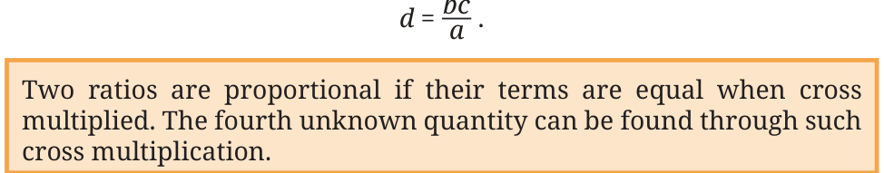
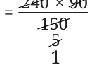

Example 8: For the mid-day meal in a school with 120 students, the cook usually makes 15 kg of rice. On a rainy day, only 80 students came to school. How many kilograms of rice should the cook make so that the food is not wasted? The ratio of the number of students to the amount of rice needs to be proportional. So, 120 : 15 :: 80 : ?
What is the factor of change in the first term? We can find that by dividing the terms \(\frac{80}{120} = \frac{2}{3}\) . The number of students is reduced by a factor of \(\frac{2}{3}\) . On multiplying the weight of rice by the same factor, we get,
\(15 \times \frac{2}{3} = 10\).
So, the cook should make 10 kg of rice on that day. The situation above is a typical example of a problem where we need to use proportional reasoning to find a solution. Four quantities are

linked proportionally, out of which three are known and we must find the fourth, unknown, quantity. To solve such problems, we can model two proportional ratios using algebraic notation as \(- a\) : b :: c : d. For these two ratios to be proportional, we know that term c should be a multiple of term a by a factor, say f, and term d should be a multiple of term b by the same factor f. So,
\(c = f a ...(1) d = f b ...(2)\)
From (1) and (2), we can say that,
\(f =\) ac and \(f = \frac{d}{b}\) . Therefore, ac \(= \frac{d}{b}\) .
Multiplying both sides by ab, we get, ab \(\times\) ab \(\times\) aa \(\frac{c}{c} = =\) ab \(\times\) dab \(\times d \frac{b}{b}\) bc = ad or ad = bc Thus, when a : b :: c : d, then ad=bc. This is known as cross multiplication of terms. Since ad = bc, we can show that = bc .

In ancient India, Āryabhaṭa (199 CE) and others called such problems of proportionality Rule of Three problems. There were 3 numbers given - the pramāṇa (measure - ‘a’ in our case), the phala (fruit - ‘b’ in our case), and the ichchhā (requisition - ‘c’ in our case). To find the ichchhāphala (yield - ‘d’ in our case), Āryabhaṭa says, “Multiply the phala by the ichchhā and divide the resulting product by the pramāṇa.” In other words, Āryabhaṭa says, “pramāṇa : phala :: ichchhā : ichchhāphala,” therefore, pramāṇa \(\times\) ichchhāphala = phala \(\times\) ichchhā.
Thus,
ichchhāphala = pramāṇa . Using the cross multiplication method proposed by Āryabhaṭa, ancient Indians solved complex problems that involved proportionality. Example 9: A car travels 90 km in 150 minutes. If it continues at the same speed, what distance will it cover in 4 hours? If it continues at the same speed, the ratio of the time taken should be proportional to the ratio of the distance covered.
150 : 90 :: 4 : ?
Is this the right way to formulate the question? No, because 150 is in minutes, but 4 is in hours. The second ratio should use the same units for time as the first ratio. Since 4 hours is 240 minutes, the right form is
150 : 90 :: 240 : ?
How can you find the distance covered in 240 minutes? Discuss with your classmates and find the answer using different strategies.
Note to the Teacher: Instead of giving one ‘method’ to solve the problem of the distance, encourage students to reason out the answer through different strategies. They can use their understanding of equivalent fractions and equivalent ratios to find the answer.
We can model this proportion as
150 : 90 :: 240 : x.
By cross multiplication, we get
\(150 \times x = 240 \times 90\)
Therefore, \(= \frac{240 \times 90}{150}\) .
\(= = 144\).

The distance covered by the car in 4 hours is 144 km. Example 10: A small farmer in Himachal Pradesh sells each 200 g packet of tea for ₹200. A large estate in Meghalaya sells each 1 kg packet of tea for ₹800. Are the weight-to-price ratios in both places proportional? Which tea is more expensive?

The ratio of weight to price of the Himachal tea is 200 : 200. What is the weight to price ratio of the Meghalaya tea? Is it 1 : 800? This would not be appropriate, because we considered the weight in grams in the case of Himachal. So, the weight to price ratio is 1000 : 800 in Meghalaya after we convert the weight to grams. To check if the ratios are proportional, we need to see if both ratios are the same in their simplest forms. The Himachal tea ratio in its simplest form is 1 : 1. The Meghalaya tea ratio in its simplest form is 5 : 4. So, the ratios are not proportional. Which tea is more expensive? Why?
Note to the Teacher: Encourage a discussion on the more expensive tea, how they came to their conclusions and what the reasons for that tea being more expensive could be.
To answer the question as to which tea is more expensive, we should compare the price of tea for the same weight in both places. What is the price of 1 kg of tea from Meghalaya? It is ₹800. In Himachal, if 200 g of tea costs rupees 200, what is the cost of 1 kg of tea? Let us say that the price of 1 kg of tea is x rupees. 200 g is \(\frac{1}{5}\) of 1 kg.
So, \(\frac{1}{5} \times x = 200\).
Multiplying both sides by 5, we get
\(\frac{1}{5} \times x \times 5 = 200 \times 5 \frac{1}{5} \times x \times 5 = 1000 x = 1000\).
So, the cost of 1 kg of tea is ₹800 in Meghalaya and ₹1,000 in Himachal Pradesh. Therefore, the tea from Himachal Pradesh is more expensive. Activity 1: Take your favourite dish. Find out all the ingredients and their respective quantities needed to make the dish for your family. Suppose you are celebrating a festival and you want to invite 15 guests. Find out the quantities of the ingredients required to cook the same dish for them.